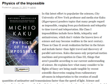
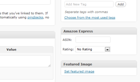

|

Example of a post with a product image and Associate link.
The grid layout, which can be sorted by rating or post date, and optionally grouped by category.  The metabox found in the edit page for a post where you can specify the ASIN/ISBN and rating. |
Amazon Express allows you to easily insert Amazon Associates links and Amazon product images, including images of book covers, into your Wordpress posts. This is ideal for quickly creating book review or product review posts. Either the Amazon Standard Identification Number (ASIN) or ISBN can be entered into the Amazon Express metabox in the admin page for any post to automatically generate the content. You can also specify a rating for each product that will be displayed as stars in the post. Using the shortcode amazonx, you can insert a listing of all products on your blog. This listing can be filtered based on the rating using the minrating, maxrating, and category parameters. To create a listing of a specific category, first find the category ID by entering the wp-admin page, click on Posts->Categories, and then click on the category you would like to list. Check the address bar for the category ID at the end: tag_ID=##. Then create a post or page and write [amazonx category=##] in the content box.
Shortcode OptionsExample: [amazonx category=45 minrating=4 group_by_category=0 columns=3 limit=18]
|
{kind=link}
{kind=link}
{kind=link}